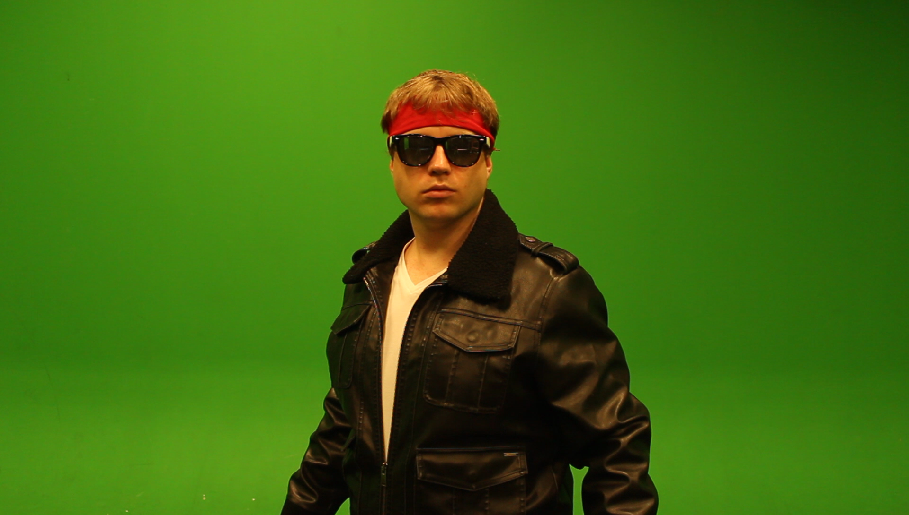
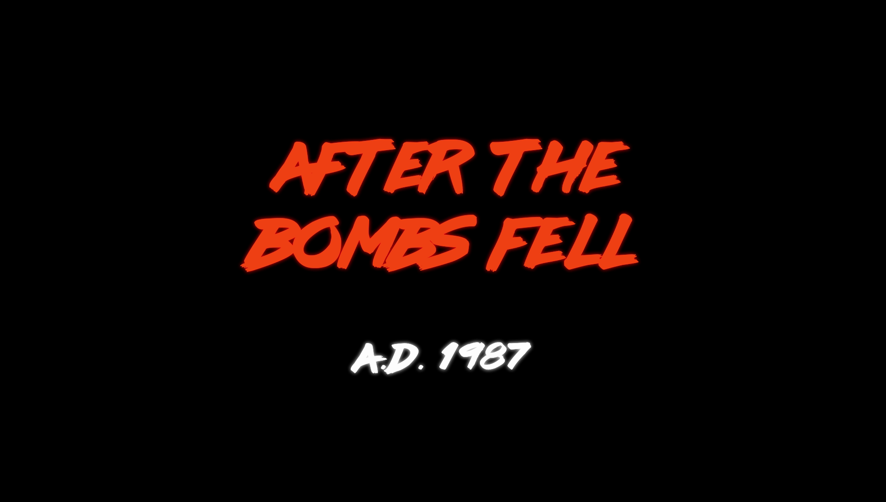
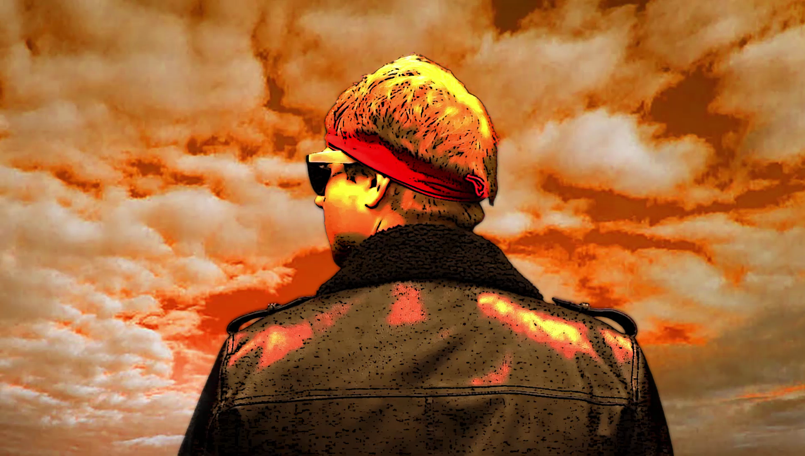
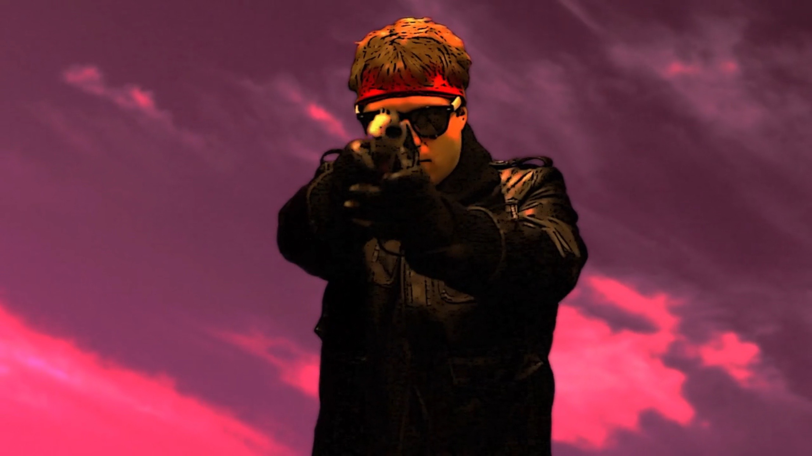
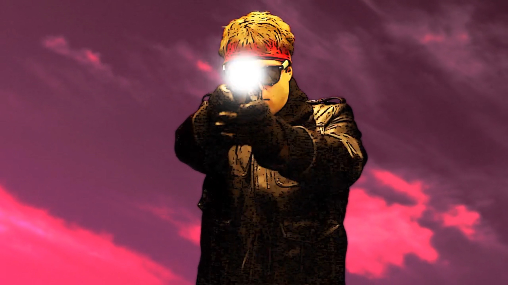
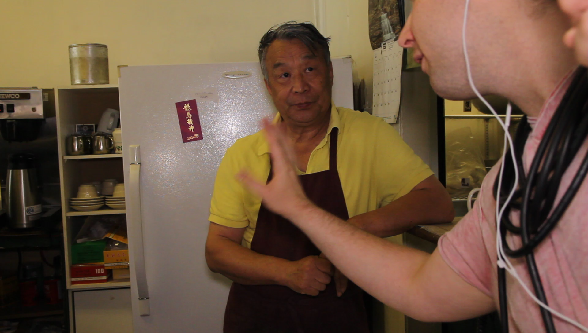
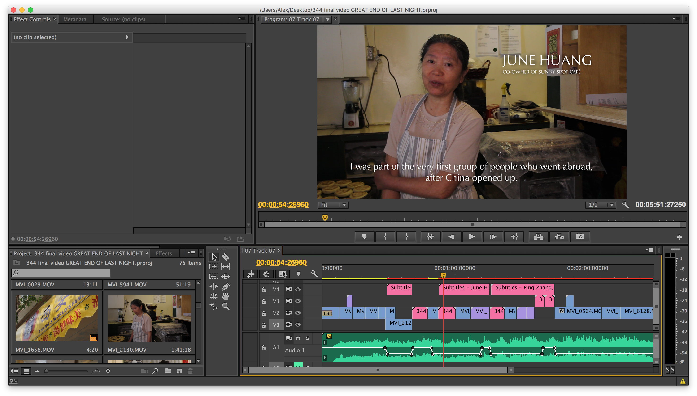
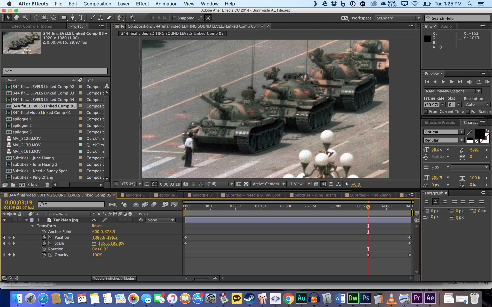

ALEX MOEN
IAT 344 PORTFOLIO
In Summer 2016, Alex Moen was enrolled in the IAT 344 "Moving Images" course. This class includes instruction on how to create a documentary or short narrative feature, as well as an introduction to visual special effects. Adding to the intensity of the course was the fact that it was a condensed "intersession" class, lasting only 6 weeks. It was an intensive immersion into the world of independant film production.
INDIVIDUAL VFX VIDEO - NEON WASTELAND
The assignment was to create an individual video - a kind of self-portrait - adding post-production video effects with a tool such as After Effects. The student would stand in front of a green screen, then alter the image to create the impression of a fantastic scene. This could be used for the student's industry promotion, or to create a short narrative.
Alex opted to create a narrative. He wanted to create something inspired by the recent trend of "more 1980s than the 1980s" style, as seen in media such as the films Drive and Kung Fury or the Hotline Miami video game. This style features a fetishization of cheesy Canon Films action movies, glowing neon text, and unashamed neo-synthpop music. Suiting up in a costume plucked from Value Village, and equipped with an old Nintendo light gun, he posed in front of the school's green screen and mugged at a video-capable DSLR camera.
Taking the footage home revealed that the Alex-as-action-hero worked, but without a villain, the piece as a whole didn't quite work. Time being of the essense, he returned for reshoots covered in garbage bags. He would play his own ghoulish enemy.

For the first draft, Alex color-corrected the footage, and added a neon glow effect as well as a sketchy "comic" look to sell the surreal vibe. The green background was composited out, and a photograph of a dramatically cloudy sky was added to the background and panned across for realism. To sell the idea that this was some stylized retro-future post-apocalypse, the sky was tinted bright orange. The footage of Alex-as-hero was juxtaposed with Alex-as-ghoul. The ghoul was covered in a blob effect, then contrast and opacity adjusted until it looked like a supernatural ghost. The video was then edited with a synthpop song from Robert Parker, with glowing titles inspired by the movie Drive attached to the beginning and end.
 
To improve a final revision, Alex shot additional footage of the sky. This was then sped up to sell the wasteland feel, and to enhance the surreality. It was decided that this sky should be tinted purple instead, with all colored titles changed to match. Finally, the firing of the gun was animated, with a large gunflash added in each frame after the trigger was pulled, which also illuminated the Alex hero for that instant. A gun noise was added, completing the project.
 GROUP DOCUMENTARY - SUNNY SPOT
Alex joined a team of 4 other students, intending to create a documentary about an antiques shop owner. They showed up at an antiques store bright and early on a Monday morning in June, with a car full of film production equipment. Apparantly, the antiques store owner had a change of heart, and declined to be filmed. This was okay: there was a backup subject, and they turned out to be the superior choice. A Chinese couple had owned a small cafe for 30 years, and were about to retire. This was an ideal subject for a short documentary.
The couple was not available to film that Monday, but it was an opportunity to film b-roll around the cafe's neighbourhood. Alex helped take charge of the direction of the film, working closely with MacKenzie Ma, who also had good filmic sense. They took shots of the people and streets around the cafe's Main St. location.
The couple was available to shoot that Wednesday only. Unfortunately, Alex was unable to attend. The 4 other members shoot footage of the couple working in the restaurant. It was good as more b-roll, but there was no story there. Alex talked with MacKenzie and they planned out how the next day of re-shoots would proceed. They needed to catch three distinct sections, forming the cafe couple's narrative arc:
A. The store and their history
B. The fact that they were retiring and
C. Their acceptance and embrace of the future and their satisfation with the past.
These would be captured by asking questions of the couple specifically to tease out this narrative arc.
The following Wednesday, the team returned for final re-shoots. The couple was asked the questions and they performed wonderfully. The team also took care to capture as many details of the cafe as they could, knowing that they may be required in the editing room. Alex took charge in setting up many of the shots and handling the sound. Alongside MacKenzie, they were truly the co-directors of the piece. Finally, they optained more b-roll of the neighbourhood.
Alex and Mackenzie took care of the editing process, working closely together on editing, titles, subtitles (considering the cafe owners spoke in Chinese). The video was edited in Adobe Premiere, with titles and "Ken Burns Effect" sequences created in Adobe After Effects.
 Mackenzie's choice of music was on a whim, but Alex loved it and told her it should stay. The music drove the logic of where to cut, and it made for a powerful piece overall. They were quite surprised by how the final result came together into an emotional piece, capturing the final moments of the couple in their cafe. The team screened the piece on June 20th for an audience of peers, where it was well-recieved.